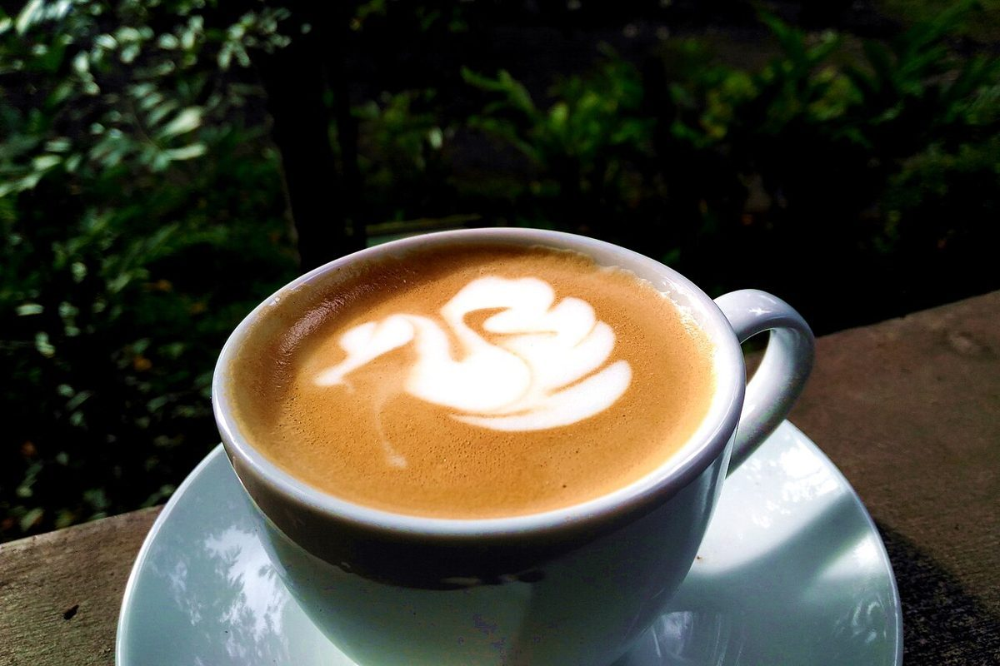

ひと息つく、午後に。


KOTOYA CAFEは、大阪府茨木市園田町にあるカフェです。
営業時間、メニュー、料金などの詳しい情報は準備中です。ご来店前にお電話かInstagramでご確認ください。
このサイトのコンセプトは制作側の案です。



お店の情報
- 住所
- 大阪府茨木市園田町10-2
- 営業時間
- 準備中(お問い合わせください)
- 定休日
- 準備中(お問い合わせください)
ご来店前のご確認は、お電話かInstagramで
背景の写真はイメージです。
試作サンプル
KOTOYA CAFEは、大阪府茨木市園田町にあるカフェです。
営業時間、メニュー、料金などの詳しい情報は準備中です。ご来店前にお電話かInstagramでご確認ください。
このサイトのコンセプトは制作側の案です。

背景の写真はイメージです。
掲載の写真はフリー素材のイメージです。店舗の実際の様子・商品ではありません。他地域で撮影されたものや、撮影地が不明なものを含みます。
電話する 072-664-9366